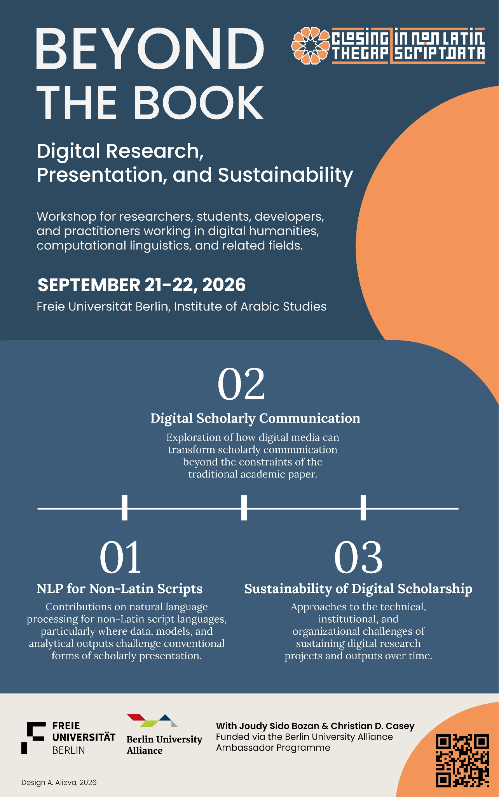
Beyond the Book · Freie Universität Berlin · 21–22 September 2026
Digital Scholarly Communications…
Keynote at Beyond the Book: Digital Research, Presentation, and Sustainability
Maxim Romanov
September 22, 2026 · The Evolution of Islamic Societies (c. 600–1600 CE), Universität Hamburg
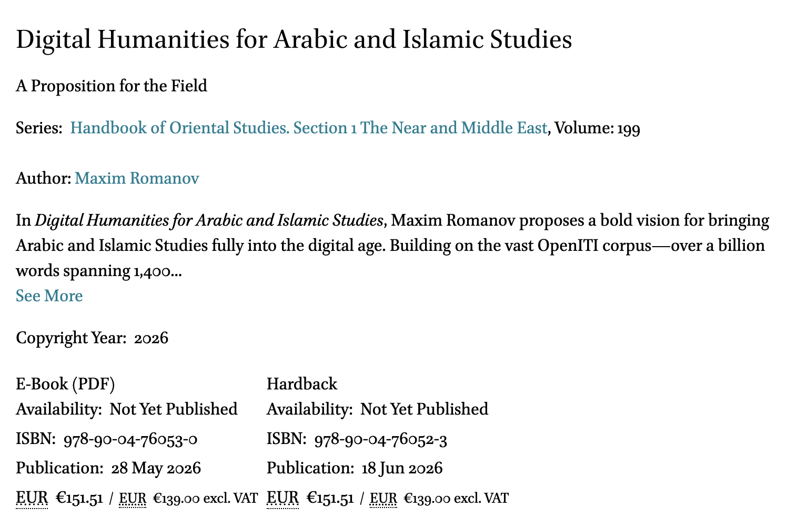
What’s in the book?
Three Chapters
- A Pitch for the DH
- Digital Avatars and Metaobjects
- Computational Inquiries
In short, this book asks: What does it mean for our field when the entire library becomes a vademecum—something that, quite literally, “goes with me” everywhere? What new possibilities and responsibilities does this transformation bring?
C’mon, man, that is cheating!— Prof. Sherman Jackson
Tracing Concepts over time with The Secret Weapon
Senior Scholar
Decades of notes. Thousands of hours in the stacks. This kind of work was the prerogative of senior scholars.
Graduate Student
One searchable library. Hundreds of classical Arabic texts. A senior scholar visibly unsettled. A tool never acknowledged.
“Why would he? These weren’t ‘real’ books. Only books needed to be cited.”
Not the first revolution, not the last…
Unlike classicists — who have been digitizing Greek and Latin texts since the 1980s — scholars of Arabic and Islamic studies had almost nothing to do with the appearance of our digital corpus.
“A scan through recent academic publications can easily leave the impression that our digital corpus does not exist at all, or if it does, it is of relatively little consequence.” — Travis Zadeh, 2016
Mountain of information
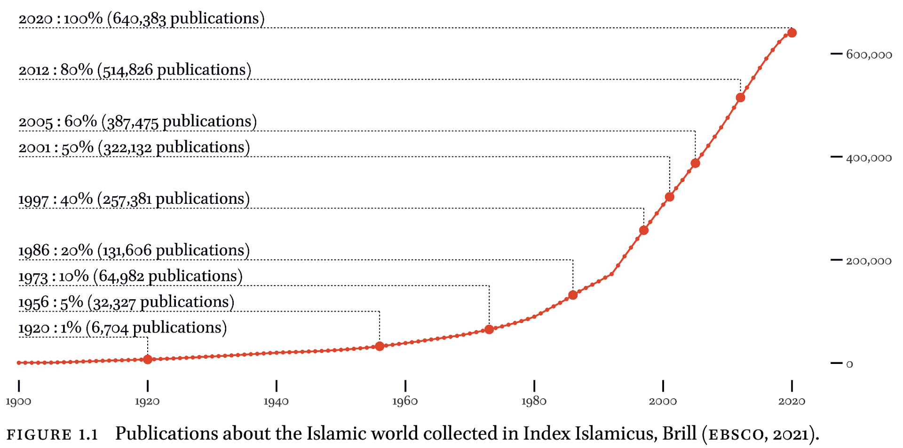
Scholarship doubled between 2000 and 2020!
The Library That Arrived Unexpected
A treasure without a map. A library without a methodology.
A field that found itself unprepared.
What do we do when the entire library becomes a vademecum?!
OpenITI, v. 2023.1.8 — “clean”
Our final subcorpus, based on version 2023.1.8, consisting solely of “clean” unique texts written up to 1400/1980:
- – 2,783 unique authors (156 fewer than in the set above, or 94.69%)
- – 7,058 unique texts (−407 fewer, or 94.55%)
- – 927.37 million tokens before cleaning
- – 868.81 million tokens after removal of most paraeditorial material and remaining “unclean” (93.68% of the uncleaned set)

But a corpus is also a historical source
- Survival bias — what reached us
- Editorial / digitization bias — what modern scholars chose to publish
- Uneven genre and chronological coverage
Source criticism begins with the instrument.
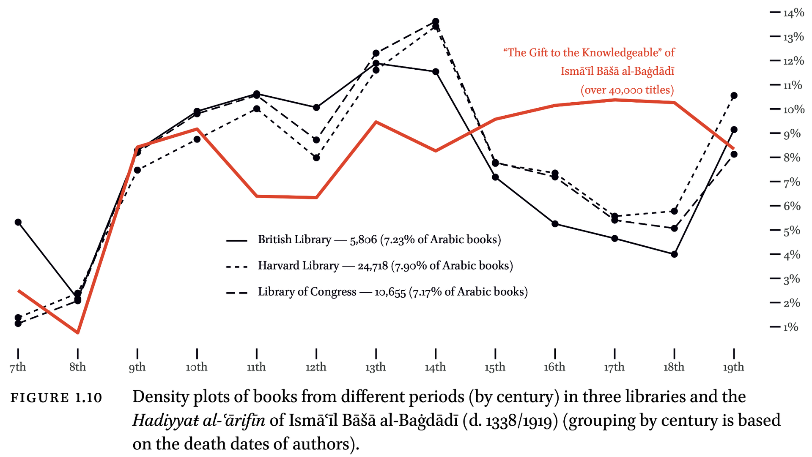
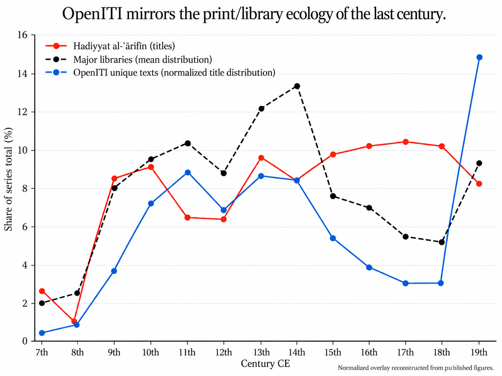
The Proposition: Four Domains
Each domain depends entirely on the success of the preceding ones — no shortcuts.
Digital Pragmatism: born from necessity, not ideology
It is truly sustainable only if you can do it alone.
- — Bare minimum technologies: limit without compromising necessary complexity
- — Learn them deeply: no dependency on external technical support
- — Automate repetition: your time is better spent elsewhere
“Simple, but not simpler.”
“Laziness is the engine of the progress.”
Digital Pragmatism: born from necessity, not ideology
It is truly sustainable only if you can do it alone.
- — Bare minimum technologies: limit without compromising necessary complexity
- — Learn them deeply: no dependency on external technical support
- — Automate repetition: your time is better spent elsewhere
“Simple, but not simpler.”
“Laziness is the engine of the progress.”
The irony of new media
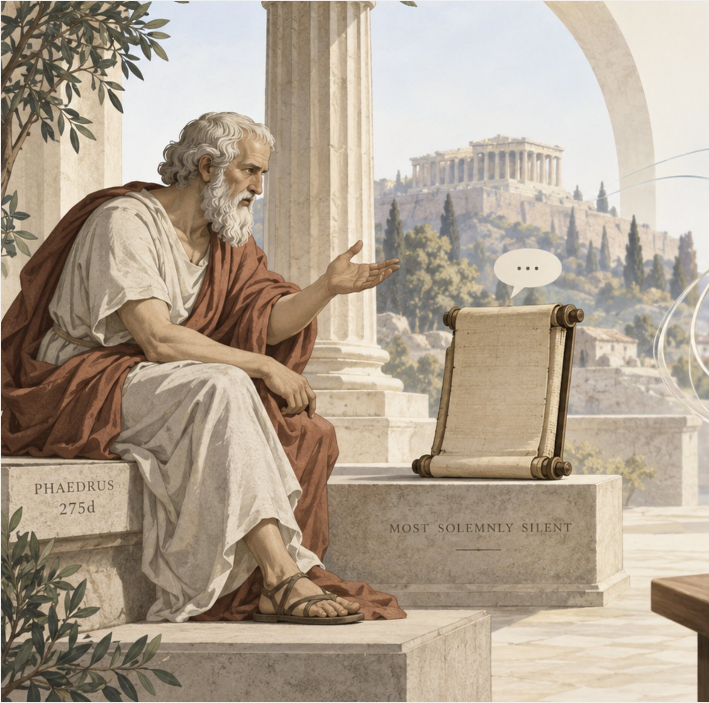
“If anyone asks them anything, they remain most solemnly silent.”
— Plato, Phaedrus 275dWriting was once suspect; today written texts are our scholarly gold standard.
Now, knowledge from LLMs is suspect…
…yet LLMs bring dialogue back to reading.
The ultimate irony: technology restores the interactive conversation Plato feared was lost.
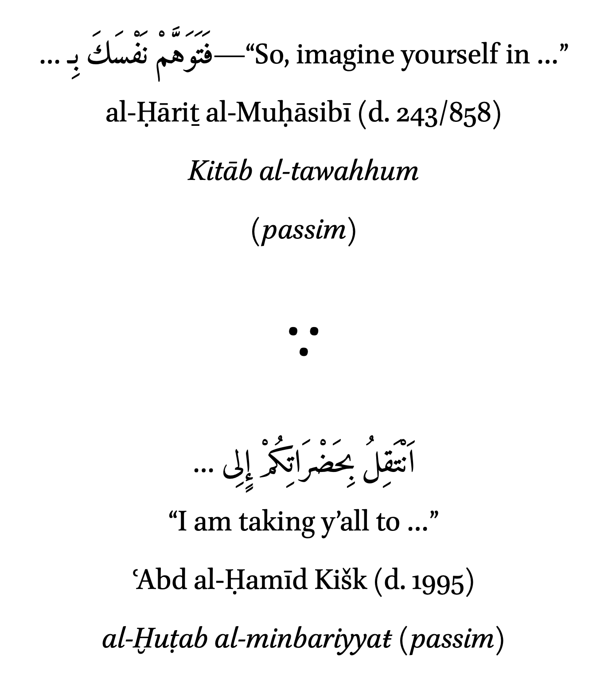
- ١Case Study 1: Tracing Term Usage
- ٢Case Study 2. Modeling Textual Typology
- ٣Case Study 3. Charting Linguistic Evolution
- ١Case Study 1: Tracing Term Usage
- ٢Case Study 2. Modeling Textual Typology
- ٣Case Study 3. Charting Linguistic Evolution
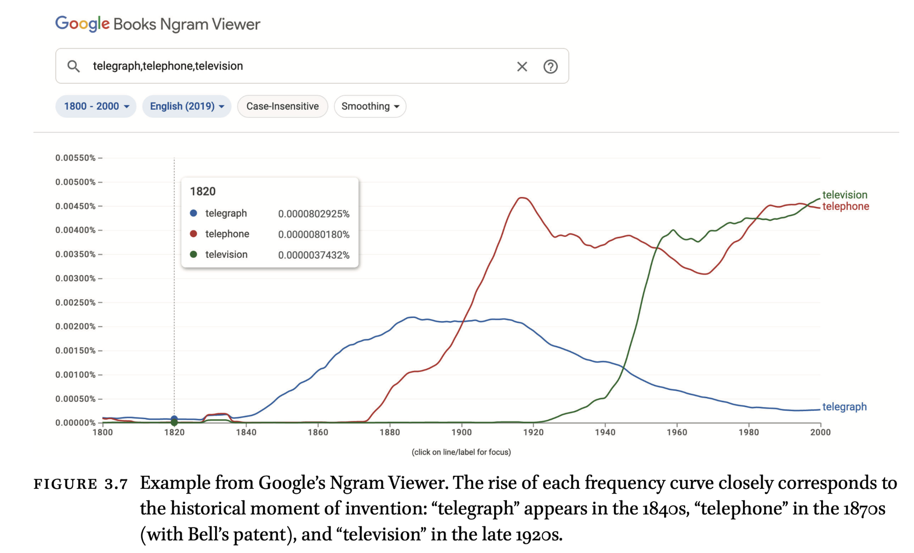
Case Study 1: Tracing Term Usage
2.1 From “The Devil’s Delusions” to Ḥadīṯ Studies
Now that we have a general sense of how the OpenITI NgramReader works, let’s consider a more complex inquiry, this time into terminology central to the study of Ḥadīṯ. In the early 2000s, I made my first attempt at writing a PhD thesis at the Institute of Oriental Manuscripts of the Russian Academy of Sciences in my hometown of St. Petersburg. My dissertation focused on a close reading of “The Devil’s Delusions” (Talbīs Iblīs) by Ibn al-Jawzī (d. 597/1201), the renowned historian, traditionist, and—perhaps most importantly—Ḥanbalī preacher (wāʿiẓ) of Baġdād.
2.2 Proposition 1: The Chronology of Transmission Terms
2.3 Proposition 2: The Decline of Isnāds
2.4 Proposition 3: The Canonization of Ḥadīṯ Collections


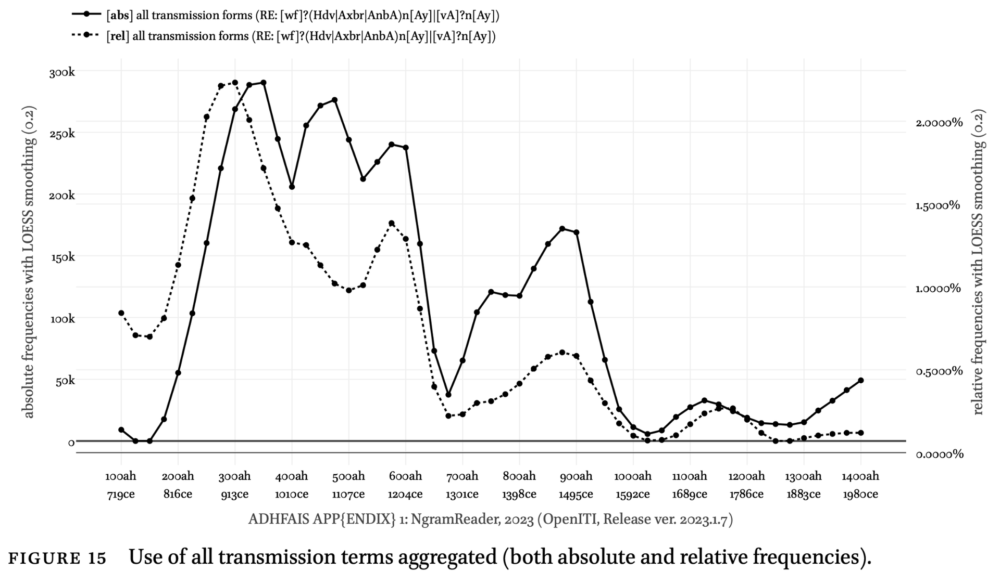
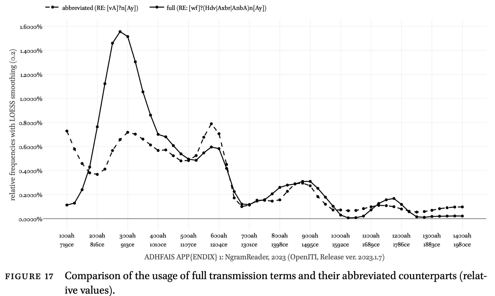
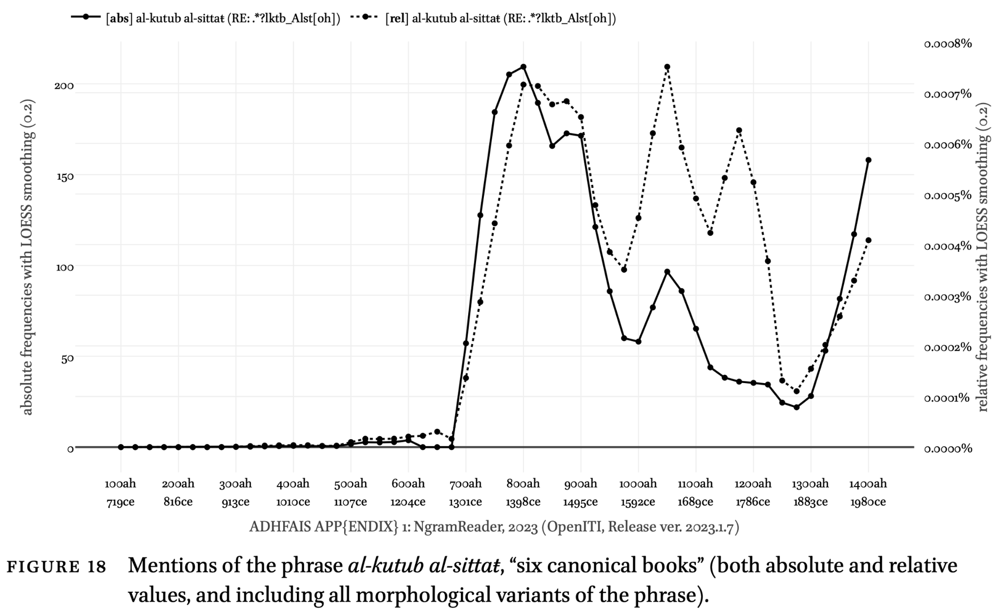

- ١Case Study 1: Tracing Term Usage
- ٢Case Study 2. Modeling Textual Typology
- ٣Case Study 3. Charting Linguistic Evolution
Case Study 2. Modeling Textual Typology
[B]Biographical type (tarājim): mostly collections of biographies[E]Exegetical type: interpretations of the Qurʾān (tafsīr)[G]Graeco-Arabic (“Greek-esque”) type (yūnāniyyāt): translations from Greek and works on the development of Greek philosophy in Arabic (falsafat, predominantly Aristotelian)[H]Historical type (tawārīḫ): mainly chronicles[F]Legal type (fiqh): a broad variety of legal texts[L]Linguistic type: a broad variety of grammatical, rhetorical, and lexicographical texts (balāġat, naḥw, maʿājim luġawiyyat)[M]Medical type (ṭibb): mainly texts on Galenic medicine[P]Poetic type (šiʿr): mainly collections of poetry (dīwāns)[K]“Scholastic-theological” type: works of kalām[Ḥ]Tradition-based type: collections of ḥadīṯ
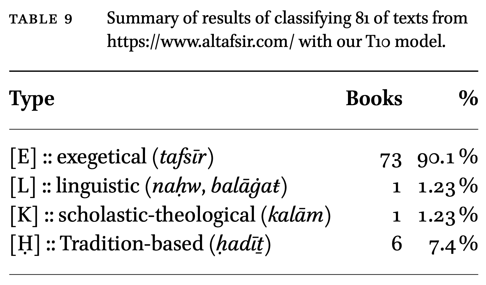
Rolling Typological Assessment
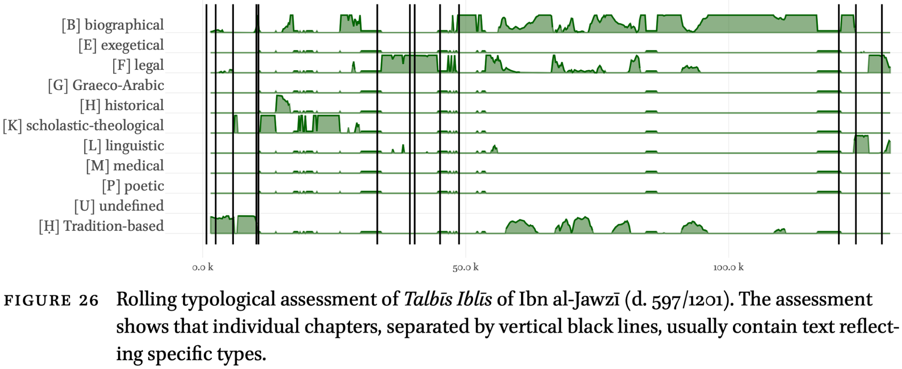
Majmūʿāt Case

- ١Case Study 1: Tracing Term Usage
- ٢Case Study 2. Modeling Textual Typology
- ٣Case Study 3. Charting Linguistic Evolution
Case Study 3. Charting Linguistic Evolution
- The pre-classical period lasts from the appearance of Islam until the end of the Umayyad period (c. 1–132/622–750).
- The classical period corresponds roughly to the ʿAbbāsid period (132–656/750–1258).
- The postclassical period encompasses the reign of the Mamlūks (648–923/1250–1517) and most of that of the Ottomans.
- The modern period (from Napoleon’s invasion of Egypt in 1213/1798), extending to the present day.
Case Study 3. Charting Linguistic Evolution
- Preclassical c. 622–750
- Classical 750–1258
- Postclassical 1258–1798
- Modern 1798–
Where do these lines come from?
Geschichte der arabischen Litteratur, 5 vols. (1896–1943)
Cambridge History of Arabic Literature, 6 vols. (1983–2006)
Encyclopedia of Arabic Language and Linguistics (Brill)
A model the field built impressionistically
Periodization is unavoidable:
It organizes research, explanation, teaching.
It is a major historian’s tool.
But the architecture of the standard scheme was never systematically derived from the written tradition as a whole.
What if we ask the written tradition itself?
The obvious casualty: the Mamluk centuries
c. 1250–1517: one of the busiest periods of Arabic textual production
Yet usually absorbed into a vast “postclassical” period, often called the “Period of Decadence”
The category hides distinctiveness instead of explaining it
Does the corpus itself see a coherent middle period?
Two witnesses
First witness: Corpus
Two lenses on change
Keywords (TF–IDF): what texts are about
Style (MFV): how texts are written
- Hundreds of parameter combinations
- 3,000 random samples (MFV)
- 72,000 dendrograms » 48 consensus trees
Do not trust a tree. Ask what survives across trees.
Style
stylometry
- distributions of frequencies of most frequent words (function words) are unique to individual:
- authors
- periods
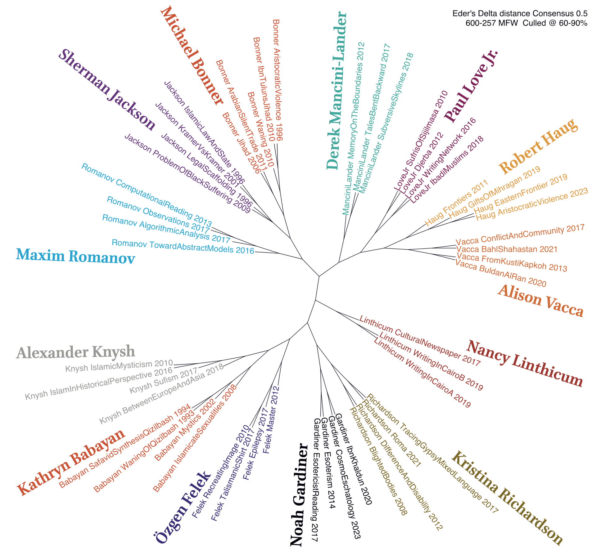
Style
stylometry
- distributions of frequencies of most frequent words (function words) are unique to individual:
- authors
- periods
Jurjī Zaydān’s writings
(1) 1891–1902 · (2) 1903–1905 · (3) 1906–1914


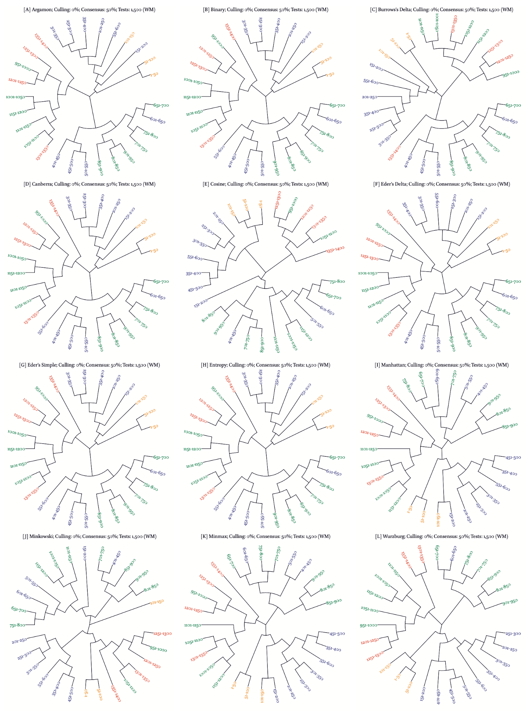
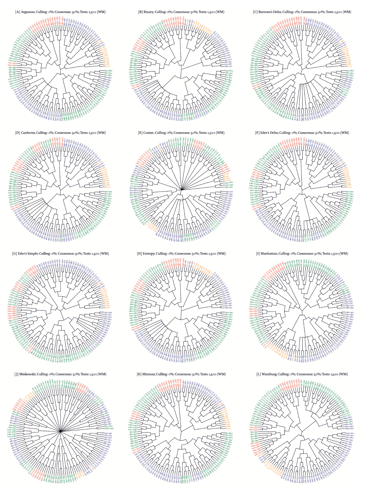
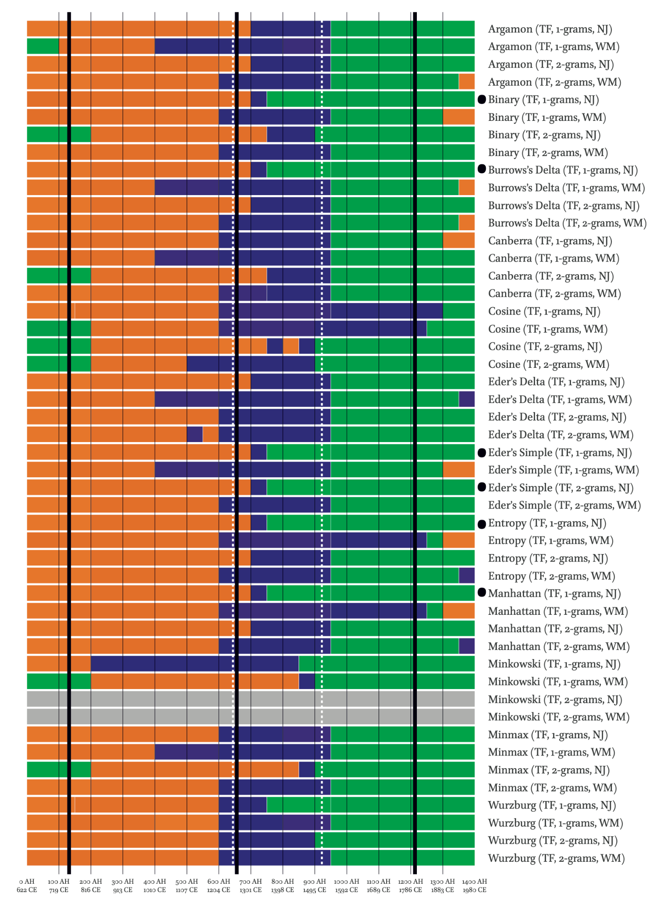
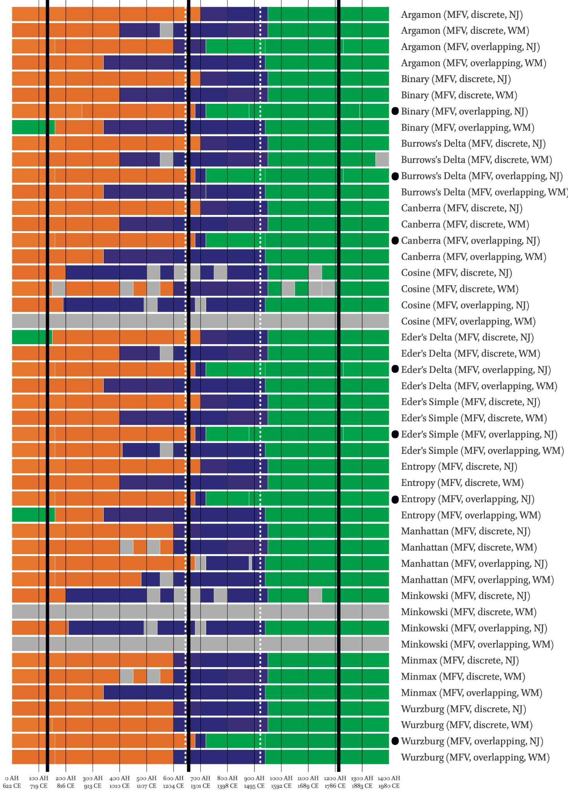
Major periods
- The early macroperiod (622–1200)
- The middle macroperiod (1200–1540)
- The late macroperiod (1540–1980)
Results of majority of 72,000 dendrograms:
3,000 stylometric samples (1,500 discrete; 1,500 overlapping)
12 distance metrics, 2 major clustering algorithms;
48 tf-idf keyword tests.
The middle macroperiod (c. 1200–1540)
- Thematic profiles isolate it as a distinct period
- Stylometric profiles often attach it to the early macroperiod
- The language evolves slower than the written tradition: new distinct themes, but older language
Two clocks: themes shift faster than language.
A different macrohistory of the written tradition
- Early: c. 622–1200
- Middle: c. 1200–1540
- Late: c. 1540–1980
- Boundaries are transition zones, not event dates
Two witnesses
Second witness: Bio-Bibliographical Collection
Second witness: 8,800 authors
Ismāʿīl Bāšā al-Baġdādī (d. 1338/1919)
Hadiyyat al-ʿārifīn
c. 8,800 authors; 40,000+ titles
A bio-bibliographical model of the tradition
Independent of the corpus experiments
c. 600–1200: an Iraqi-Iranian world

c. 600–1200: an Iraqi-Iranian world

c. 1200–1540: a Syrian-Egyptian world

c. 1200–1540: a Syrian-Egyptian world
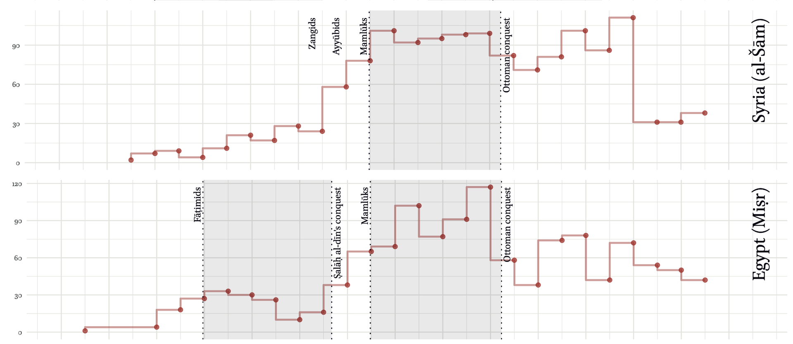
After c. 1540–1900: a new polycentric geography

After c. 1540–1900: a new polycentric geography
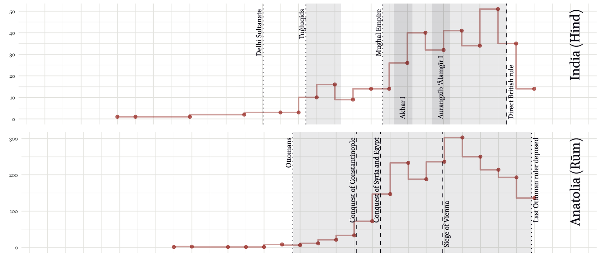
Two transitions: 1200–1300 and 1500–1600
- Westward movement from Iraq and Iran begins before the Mongol conquest
- Andalusi scholars move east as Christian expansion advances in Iberia
Patterns: Great Cities of Islam
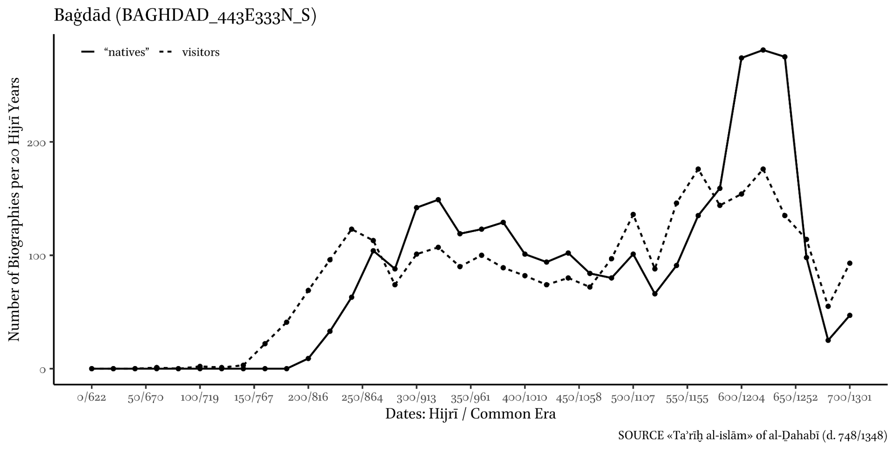
Two transitions: 1200–1300 and 1500–1600
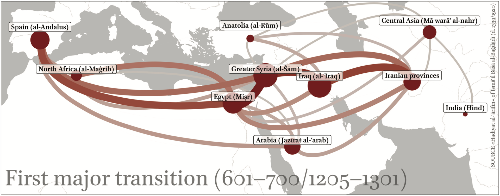
Two transitions: 1200–1300 and 1500–1600
- The rise of the Ottoman Empire marks the emergence of a Turco-Arabic world under Ottoman control
- and the parallel development of an Indo-Iranian sphere.
Two transitions: 1200–1300 and 1500–1600
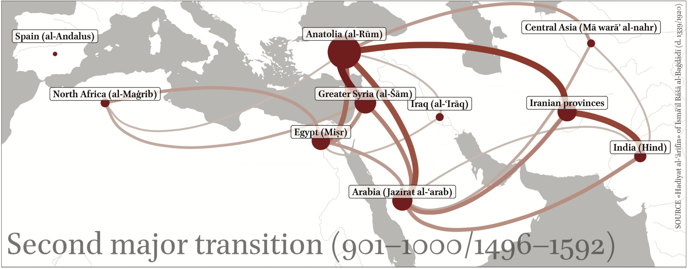
Two independent witnesses
CORPUS of TEXTS
lexical/thematic and stylometric change
REGISTER of AUTHORS
cultural geography over time
Different biases. Different assumptions. Similar macro-boundaries.
Three long cultural regimes (macroperiods)
- The early Iraqi-Iranian · c. 622–1200
- The middle Syrian-Egyptian · c. 1200–1540
- The late Turco-Indian · c. 1540–1980
(with discernable sub-periods inside each)

Periods are also places
- Traditional periodization assumes universality
- Computational periodization demonstrates that language and textual production are aligned in time with changing cultural geography *
Each period gets not just a name, but also a map.
(* to be redone on the EIS1600 data: 600,000 bios > c. 130,000 individuals)
What changes if we accept this model?
- The Mamluk centuries become a coherent middle period, not the beginning of decline
- 1258 is recontextualized as an event within a longer transition (1200–1300)
- c. 1540 emerges as a major structural break (essentially, the end of the Mamluk period)
- Chronology & geography become part of the same explanation

Afterword: farḍ al-kifāyaŧ
A communal duty in Islamic law: if enough members of a community fulfill it, the rest are absolved. If all neglect it, the entire community is accountable.
No one else will digitize our texts.
No one will create our corpora.
No one will develop methods for our research questions.
This is our responsibility, and ours alone.
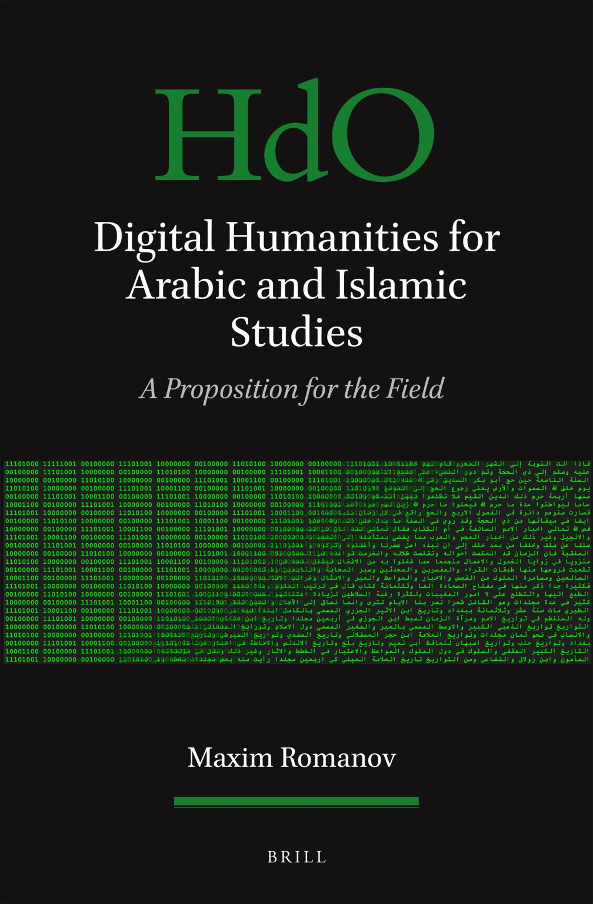
In short, this book asks:
«What does it mean for our field when the entire library becomes a vademecum — something that, quite literally, “goes with me” everywhere?»
Chapter 1
Why we should even bother—a question that remains at the heart of every discussion about the digital.
Chapter 2
How we might go about harnessing the new digital opportunities within the field.
Chapter 3
What we can expect to accomplish:
1) trace term usage
2) model textual typology
3) chart linguistic evolution
Altogether, the book proposes a vision of digital humanities relevant to the field of Arabic and Islamic studies. It argues that this venture is not about cheating, but about keeping up with the rest of the world and ensuring that the future of the field remains in our own hands.